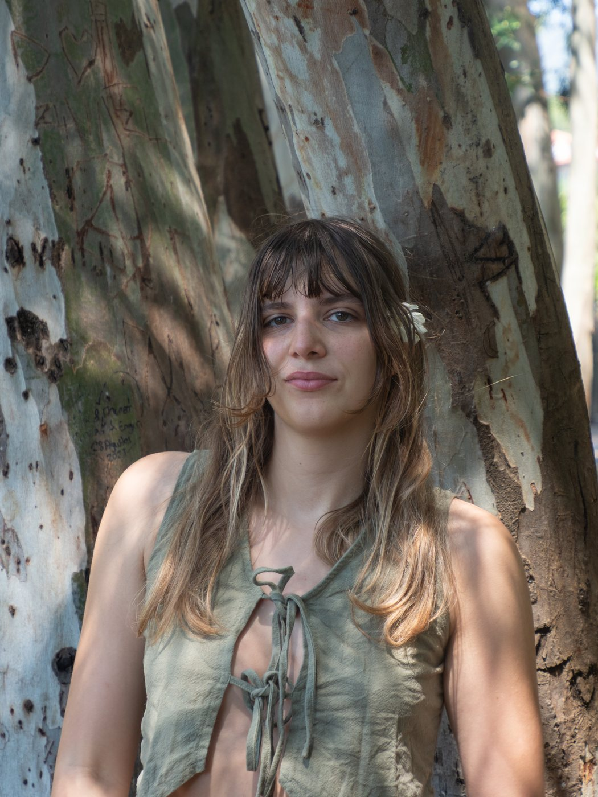

Meet Leyla
I know this pain from the inside.
I'm Leyla, a breathwork therapist and mind-body practitioner offering decolonial mind-body medicine for chronic pain. This is how I found my way through, and why I now walk alongside you.

I was born in Istanbul, a city defined by chaos, depth, and the meeting of cultures. Growing up there shaped how I move through the world. As a child, I was diagnosed with advanced scoliosis. Doctors told me I'd either live in pain my whole life or have surgery to rearrange my spine, and for years I lived with the belief that my body was fragile, unreliable, and something to be endured rather than trusted.
At eighteen I moved to Los Angeles, and two years later I began practicing yoga. For the first time, I experienced my body not as a limitation but as a source of strength, adaptability, and change. Teaching yoga became a way for me to share that discovery with others.
On May 2024, my body broke down in a way I could never have anticipated. After teaching a class, I was suddenly struck with excruciating pain from my lower back down my right leg. What followed was nearly a year of immobility: months of barely being able to get out of bed, unable to walk more than a few minutes, cycling through endless medical treatments, unable to practice the yoga that had once been my anchor.
Eventually, I decided to leave the U.S. and return to Türkiye. I settled in Akyaka, a small village on the Aegean coast, surrounded by family, community, and nature. It was there that I encountered the work of Dr. John Sarno and the field of mind-body medicine, which I began to weave together with my own practices of yoga and breathwork. I read, I journaled, and I allowed myself to turn toward the pain that had been commanding my life, listening for what it had to say. Within two weeks, the pain lifted completely.

As I healed the pain in my body, I began to notice how many people around me were living in a similar situation. When we are in pain, our world contracts. We lose access to connection, to movement, to hope and to our power. Having found a way through, I carry a responsibility to share what I've learned.
The loneliness of chronic pain can only be understood by those who've lived it.
At the core of all my work is a commitment to easing suffering and contributing to the transformation of the systems that create it. I root my work in what I learn from nature and in the wisdom of indigenous cultures that have long carried practices of collective healing. I am deeply shaped by liberation movements, which show us again and again the strength and resilience of our people.
I refuse to separate spirituality from justice.
I hope that after some time working together, you won't need me anymore.
If this resonates with you, and you feel I could be a source of support in your path, I invite you to reach out and connect.
Training & credentials
This work is deeply intuitive, rooted in my own lived experience. I've also had the privilege of studying with many teachers whose wisdom continues to shape it.
- Bachelor of Cognitive Science, University of Southern California
- SarnoXSachs Chronic Pain Practitioner Training
- Certified Breathwork Therapist, Inspire Breathwork
- 200-hour Yoga Teacher Training, Andrew Sealey and Christine Anderson
- 300-hour Advanced Yoga Teacher Training, Rasa Yoga with Sianna Sherman
- Meditation Teacher Training, Punnu Wasu and Monk Greg
- Yoga Nidra, Mudra and Pranayama Training
About Leyla Fıratlı
Leyla Fıratlı is a breathwork therapist and mind-body practitioner offering decolonial mind-body medicine for chronic pain. Based in Akyaka, Türkiye, she works with clients online and in person in Türkiye, the US, the UK, and beyond. Trained through the SarnoXSachs Chronic Pain Practitioner Training and certified in breathwork therapy with Inspire Breathwork, she draws on the work of Dr. John Sarno, somatic awareness, and nervous system regulation to support people with persistent symptoms, including back pain, sciatica, anxiety, and pain without a clear structural cause. She holds a degree in Cognitive Science from the University of Southern California and over 500 hours of yoga teacher training. Her approach connects individual pain to collective and political conditions.